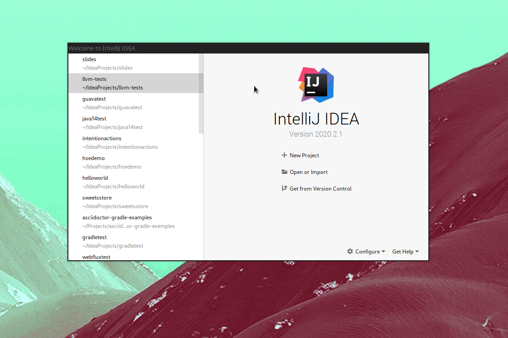
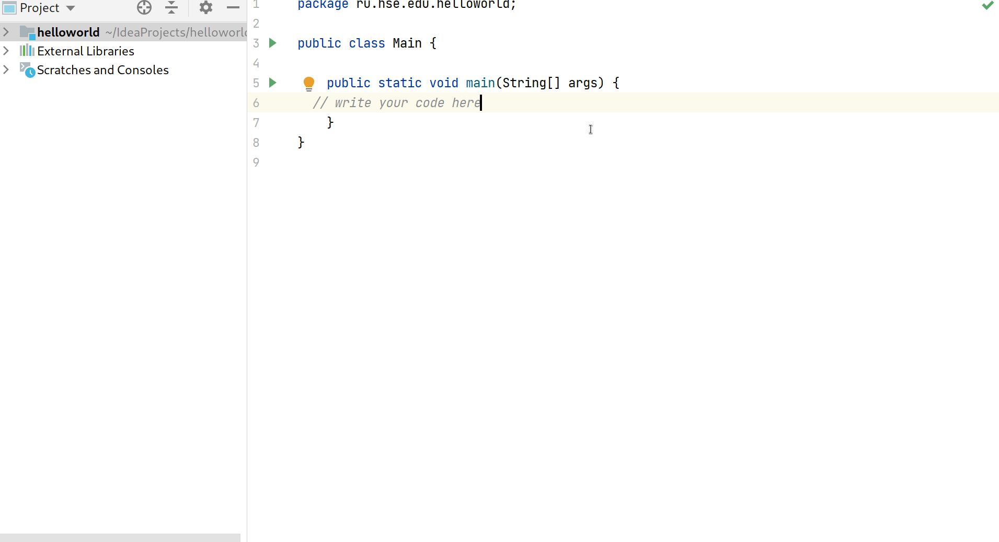
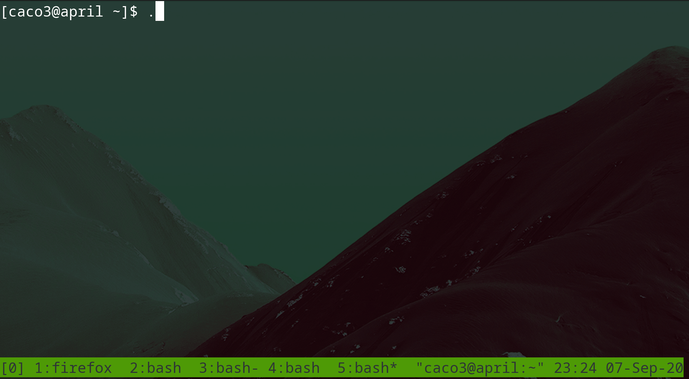
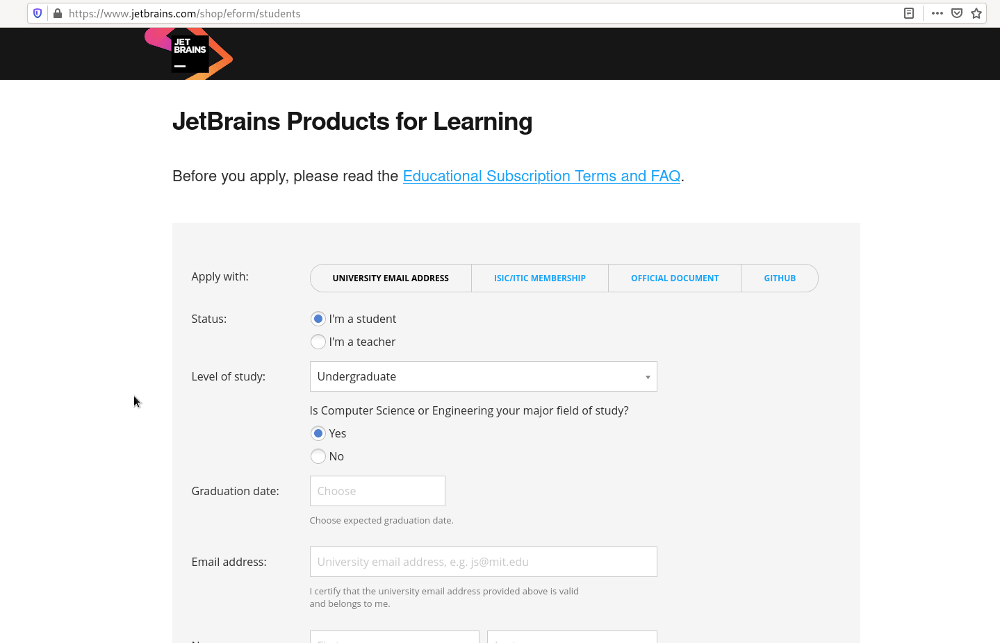
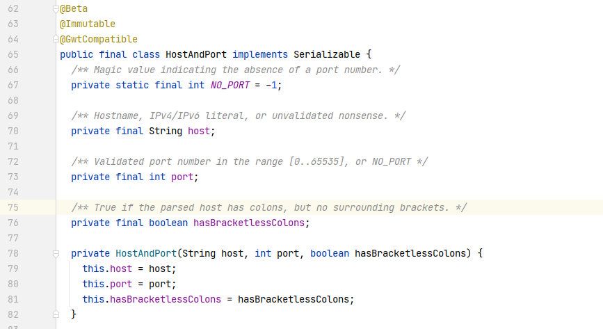

$ sudo snap install intellij-idea-ultimate --classicСеминар 1
Конструирование программного обеспечения
практическое занятие 1
Курс ВШЭ
Кто здесь?
Денис Заведеев
Программирую на Java ~4 года.
Работал над проектом "Школьная Цифровая платформа"
На данный момент занимаюсь рантаймом одной системы в ИСП РАН
Коммуникации
Оперативное общение - в Slack
Задания/материалы - Moodle (будет объявлено позже)
Почта: happy96538@gmail.com
Telegram: @cac03
Вопросы - #бпи198, #general, ЛС
План семинара
Разберем формулу оценивания
Посмотрим что такое Java и какие приложения на ней пишут
Установим среду разработки - Intellij IDEA
Запустим Hello World
Настроим запуск из командной строки
Подключим Google Code Style
Формула оценивания
(см. лекцию 1)
Формула оценивания
FinalGrade = min(0.5 * FinalExam + 0.5 * Accumulated; 10)
FinalExam- экзамен (тест) в конце курсаAccumulated– накопленная оценка за весь курс
Информация от Ефима Михайловича - более приоритетная
Накопленная оценка
Accumulated =
0.3 * Semester1- первый семестр0.2 * DPTest- тест в третьем модуле по теме Design Patterns0.5 * Semester2HW- ср. оценка за Д/З второго семестра0.3 * Seminars- оценка работы на семинарах
Накопленная оценка
Semester1 = min (0.3 * Mod1Test + 0.5 * Exam1 + 0.4 * Semester1HW, 10);:
Mod1Test– это оценка за тест 1-го модуляExam1– экзамен (тест) в конце 1-го семестраSemester1HW– это оценка за домашние задания 1-го семестра
Д/З (1-й семестр)
2 домашних задания:
HW1- в первом модулеHW2- во втором
Если оценка за
HW1<HW2:(0.6 * HW1 + 0.4 * HW2)
иначе:
(0.4 * HW1 + 0.6 * HW2)
Накопленная оценка
Seminars:
выставляемая преподавателем семинаров в конце года
учитывает активность работы студента на практических занятиях
при пассивном посещении всех практических занятий гарантируется оценка 1
Вопросы?
(по формуле оценивания)
Java
Java. Что это?
Объектно-ориентированный язык программирования
Write Once, Run Anywhere (За счет чего?)
Код запускается в управляемой среде (JVM):
автоматическое управление памятью*
безопасность при исполнении кода
Java. Кто на ней пишет?
Intellij IDEA - написана на Java/Kotlin
Twitter использует Scala - язык, запускающийся на JVM
и другие
Java. Что на ней пишут?
Enterprise-приложения
Веб-серверы
Базы данных (Apache Cassandra, Neo4j, …)
IDE (Intellij IDEA и другие)
и другие
См. также: The 25 greatest Java apps ever written
Java. Вопросы?
(Про Java в целом)
Код
Где писать код?
Самый простой способ - блокнот +
javacКак правило, пишут в IDE:
Eclipse
Apache Netbeans
Intellij IDEA
Intellij IDEA

intellij-demo.gif
Intellij IDEA
Как установить?
На Windows
Как установить?
На Linux
Рекомендуется через пакетный менеджер
Через
snap:
Дистрибутивы, основанные на Arch Linux, - через AUR
$ yay intellij-idea-ultimate-editionКак установить?
На Mac OS
Через
brew(cask -intellij-idea):
$ brew cask install intellij-ideaUE / CE
Intellij IDEA Community Edition(CE) - бесплатный продукт с открытым исходным кодом
Intellij IDEA Ultimate edition(UE) - коммерческий продукт, платный, расширяет возможности CE (подробнее - здесь)
У студентов есть возможность получить IDEA UE бесплатно (оставим на конец семинара)
Вопросы?
(Про IDE)
Hello World
в картинках
Создание проекта

hello-world-create-project.gif
Сам код

hello-world-code.gif
Вопросы?
(Про Hello World)
JDK
(Java Development Kit)
JDK
JDK - комплект разработчика приложений на языке Java, включающий в себя:
компилятор Java (javac)
стандартные библиотеки классов Java
примеры, документацию, различные утилиты
исполнительную систему Java (JRE)
Как установить?
С сайта Oracle (нельзя использовать в продакшене)
Можно установить из IDE
Установка (Intellij)

install-jdk-from-idea.gif
Установка JDK

java-version.gif
PATH
Чтобы не указывать полный путь до java необходимо добавить путь к java в переменную окружения PATH.
Инструкции:
Демо для Windows

export-path.gif
Демо для Windows

Вопросы?
(по установке JDK)
Лицензия JetBrains
Лицензия JetBrains
JetBrains предоставляет бесплатные лицензии в образовательных целях на все свои продукты.
Среди предлагаемых продуктов:
Intellij IDEA UE
CLion - IDE для C++
PyCharm (Python)
и другие
Нельзя использовать для коммерческой разработки
Полные условия - здесь
Как получить?
Заполнить анкету
Получить письмо
Следовать инструкциям, указанным в письме
Активировать IDE
Анкета

jetbrains-license-form.gif
Письмо
Должно прийти письмо примерно следующего содержания:

Действия после получения письма
Скорее всего, не будет ничего сложнее, чем создать учетную запись JetBrains
Активация лицензии
Перейти в Help
Register
Add new license
Ввести свои данные
Если такая ошибка

Тогда
Войти на сайте JetBrains
Your Account
Password
Get App Password
Скопировать и вставить пароль
Картинка

Еще
Еще

Скопировать это

Вопросы?
(по получению лицензии)
Стиль кода
Предлагается использовать Google Java Style Guide
Кратко
Имена классов ПишутсяВотТак, например,
ArrayListИмена методов пишутсяТак, например,
ensureCapacityИмена локальных переменных пишутсяТак, например,
requestParameterКонстанты ПИШУТСЯ_ТАК, например,
MAX_LENGTHПакет (
package) обязателен
Пример: HostAndPort.java

Как настроить?
Скачать
intellij-java-google-style.xmlИмпортировать
Импорт

import-style.gif
Вопросы?
Спасибо за внимание
До следующей субботы (19.09.2020)